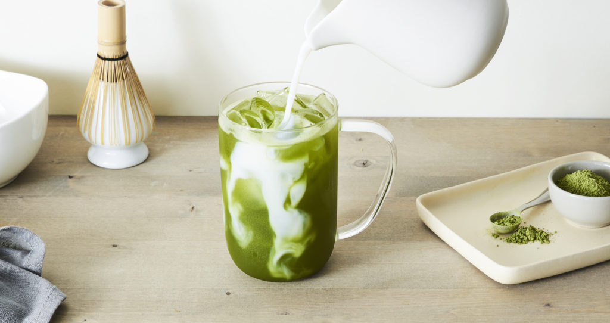

Iced Matcha Latte

Every cafe needs a drink! This matcha latte recipe is cool and refreshing. It's creamy and gives a nice energy boost that is much appreciated when
petting lots of dogs at the cafe!
Ingredients
- 12 oz milk
- 2 tsp matcha powder
- 2 tsp vanilla syrup, honey, or sugar
- 1 cup ice
Steps
- To the bowl of a blender, add the milk, matcha powder, and vanilla syrup.Blend for 30 seconds to 1 minute or until the matcha is lump free.
- Pour into a cup of ice and Enjoy!